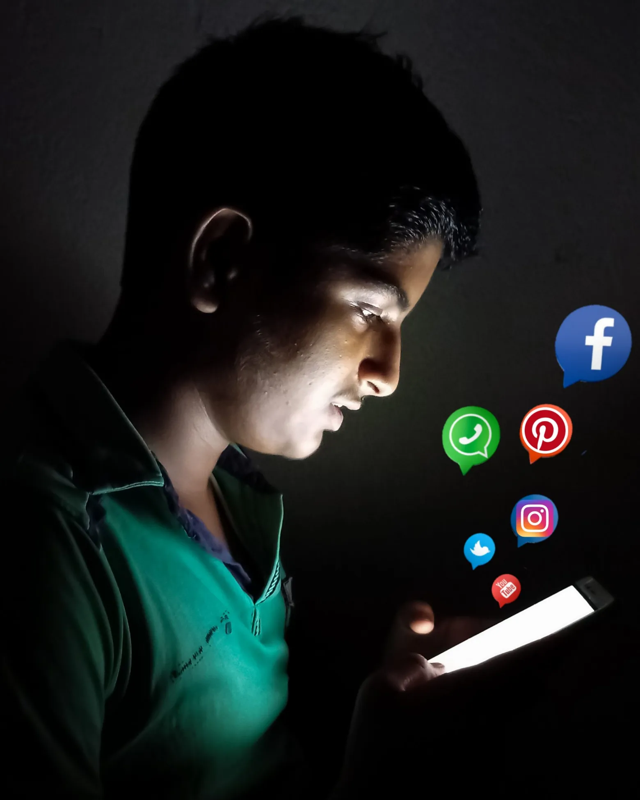

October 13th, 2024

This weekend I enjoyed camping with the congregation of our church at Waveland Park. We usually have a tradition of doing this every year, and the weather was perfect for it. There have been years that have been horrible with the weather with sleet and cold temperatures, which required us to wear coats and hats all weekend, but this week was perfect. Beautiful blue skies with clouds throughout the empty space, with temperatures in the mid 60's. We went hiking at Turkey Run and viewed the beautiful rivers and cliffs. When we were back at the campsite we played volleyball, soccer, and card games, and enjoyed everyone's company. One of my favorite parts was playing a game called Krushball, which is kind of like Spikeball but much better. Instead of a net and small rubber ball, it uses a small trampoline and a volleyball, which felt way more comfortable to play with, and I think I will end up buying one if they are in stock. I was glad that my family was able to come as well, I really enjoy spending time with my three younger sisters and youngest brother. The hotdogs and chile we had around the campfire were the best after a long day of playing sports and enjoying nature. Overall, I wouldn't have changed a thing about the past weekend, and will remember it forever.
By Aiden Bettig
October 10th, 2024

Today I wanted to talk about how I want to stop using social media as a news source and what thing I can replace that bad habit with. So what I want to do is change my behavior of scrolling and getting sucked into an online transe. But I can't just get rid of a bad habit, so I want to replace it with a good one, and a suitable way to get information about current events without looking at any social media. Current events isn't particularly important to me in the first place, so I would probably just ask my friends and family for anything that has been happening recently, and get their opinions. Obviously I want to be discerning because of bias they may have, but what even are news channels nowadays besides biased. I think engaging in converations with people about topics will be more entertaining, and will give me a chance to get better at forming opinions on the spot, along with training me to ask good questions to further the conversation. A lot of people get their ideas from the internet and just regurgitate what they have seen online, so I think it's important to form your own opinions based on truth, rather than whatever goop social media feeding everyone. Hopefully, disconnecting from billions of opinions and allowing myself to think in a conversation will help me become more independent and not rely on others to hold my beliefs. For my physical goals, I want to have a meaningful conversation with a friend or family member every single day, and have the mindset of learning one new thing, either about them, or current news. I want to consciously direct the conversation towards news they've read online, or something that's been going on in their life. And hopefully I will be able to have at least one of these conversations per day.
By Aiden Bettig